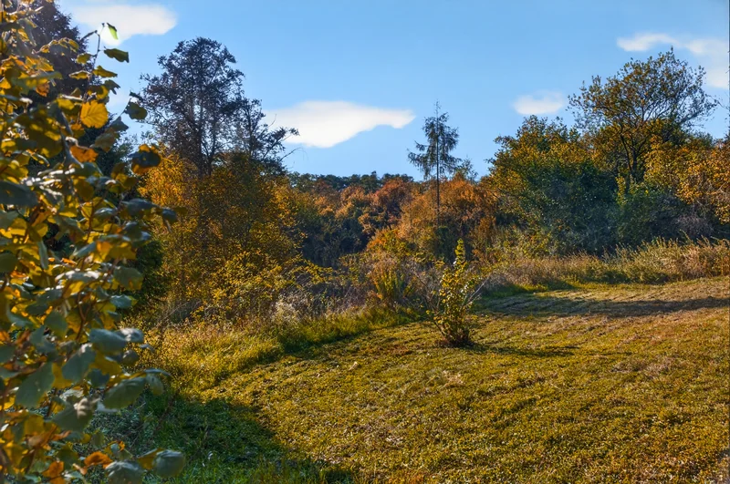

Barevnější. Přirozenější. Blíž místu.Prostor pro
Prostor pro
jiný pohled.
Tři odlišné prezentace s finálními fotografiemi, zákresem pozemku a detailními ilustračními pohledy na architekturu.
PITKOVICE / KRAJINAVelké plány
 A
A
Velké plány
začínají místem.
AProstor a perspektiva
Krajina
Světlá architektonická kompozice, fotografie v plných barvách a panoramatické průhledy.
Otevřít Krajinu ↗pitkovice.Tady může
Tady může
vyrůst váš příběh.

BŽivot venku
Zahrada
Hluboká zeleň, organické tvary a fotografie plynule zasazené do příběhu zahrady.
Otevřít Zahradu ↗PITKOVICE / ATELIÉRMísto pro
 C
C
Místo pro
vaši architekturu.
CPísek · bronz · dřevo
Ateliér
Teplé přírodní barvy, detailní architektura a čisté propojení obrazu s obsahem.
Otevřít Ateliér ↗Ve všech třech: interaktivní rozmístění šesti modelů, zákres celku ze dvou pohledů, detailní vizualizace domů, přepínání variant B/D/E a film v rámečku FD.
Podklady: fotografie z FINAL FOTO, existující zákres a potvrzené ilustrační návrhy. Ve všech třech návrzích si můžete přehrát finální film o pozemku.